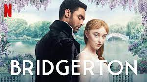
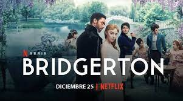

La serie está ambientada en la alta sociedad londinense durante el período Regencia inglés de principios del siglo xix. La historia se centra en dos familias, los Bridgerton y los Featherington
La familia Bridgerton está formada por Violet, vizcondesa viuda Bridgerton, sus cuatro hijos Anthony, Benedict, Colin y Gregory, y sus cuatro hijas Daphne, Eloise, Francesca e Hyacinth
La familia Featherington se integra por Lady Portia Featherington, su esposo el barón Archibald Featherington y sus tres hijas, Philippa, Prudence y Penelope, y una prima lejana, Marina Thompson
Cada temporada refleja la historia de un hermano Bridgerton: en la primera temporada la historia se basó en Daphne, mientras que la segunda temporada corresponde a Anthony.
| capitulos temporada 1 |
|---|
| 1 "Diamante de primera" |
| 2 "Sorprende y encanta" |
| 3 "El arte del desmayo" |
| 4 "Asunto de honor" |
| 5 "El duque y yo" |
| 6 "Frufrú" |
| 7 "Un abismo entre los dos" |
| 8 "Después de la tormenta" |
| capitulos temporada 2 |
|---|
| 1 "Libertino con todas las letras" |
| 2 "La carrera ya va a empezar" |
| 3 "Obsesiones" |
| 4 "Victoria" |
| 5 "Un destino inconcebible" |
| 6 "La decisión" |
| 7 "Armonía" |
| 8 "El vizconde que me amó" |
En octubre de 2020 se anunció que se lanzaría el 25 de diciembre de 2020 El promocional apareció, al igual que los carteles, en noviembre de 2020 se estreno la serie en la plataforma de netflix
| temporada | temporada 1 | temporada 2 | temporada 3 |
|---|---|---|---|
| fechas | 20/09/2020 | 25/03/2022 | 25/05/2023 |